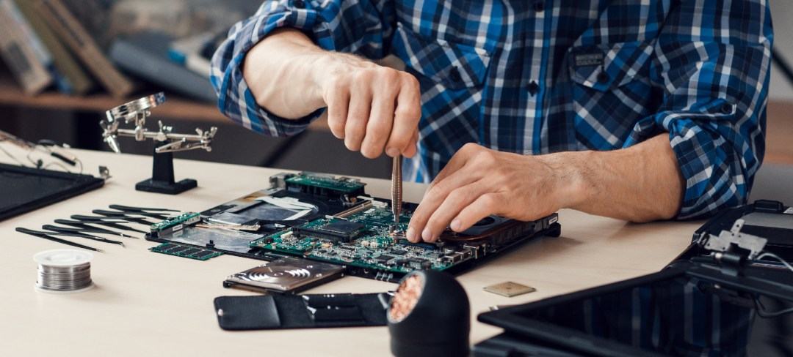

Informe 1 - Mantenimiento de una Computadora.
El informe 1 consiste en la elaboración de un video-tutorial del mantenimiento de una computadora.
Los estudiantes de practicas iniciales realizaron un video-tutorial explicando cómo se debe de dar un mantenimiento a una computadora laptop en la cual explican los pasos y cuidados que deben de tomar en cuenta para realizar dicho mantenimiento.